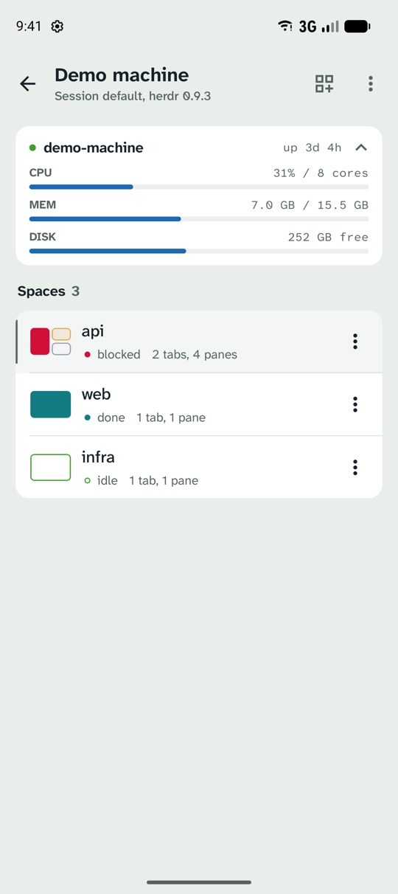
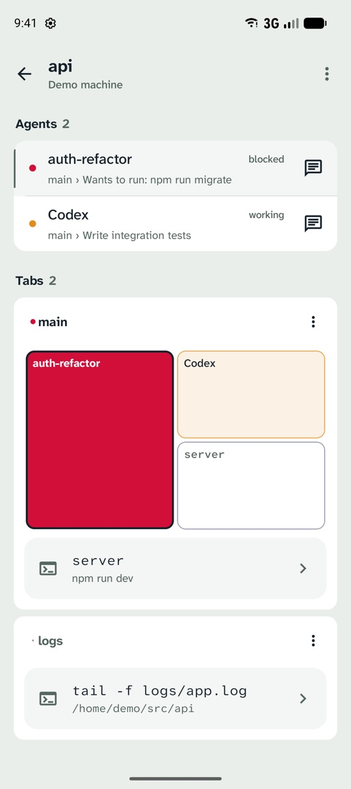
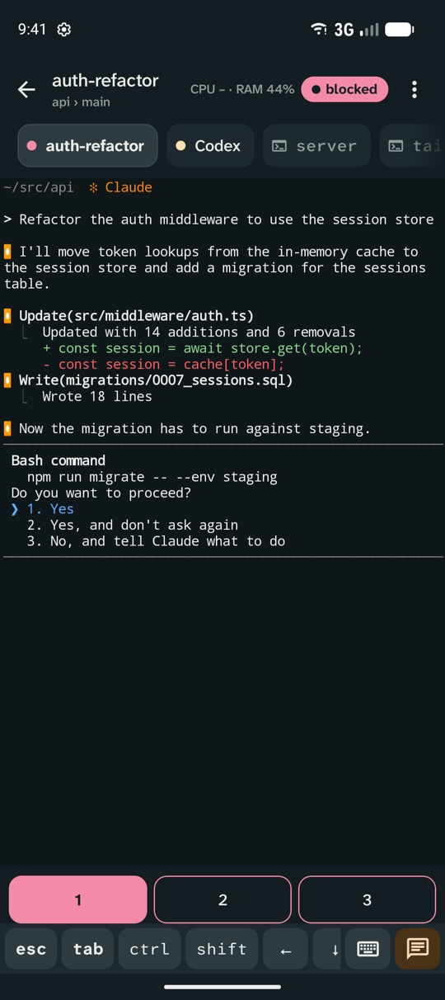

Your coding agents,
on your Android phone
wooloo mobile follows the Herdr sessions on your computer: see every agent's state, get alerted when one finishes or needs you, and answer it from a live terminal.
Closed test on Google Play


What it does
- Your Herdr spaces, tabs, agents and shells, with each agent's state: working, blocked, done or idle.
- A notification when an agent finishes or asks for permission. Tap it to jump to that agent.
- The real terminal, rendered by Herdr: reply with the keyboard or one-tap answers, send prompts and images, scroll back, split panes and create spaces.
- Connects straight to your computer over SSH or a Cloudflare Tunnel. Nothing is installed on the server, and there is no wooloo account or server in between. Privacy policy.
- Set up by scanning the Remote Access QR code in wooloo on your Mac, or add any machine running Herdr by hand.
Join the test
Before wooloo mobile can be public on Google Play, at least 12 people have to test it for 14 days. Help get it there:
If the Play links say the app isn't available, give Google Play a little while to add you after joining the group, then try again.
- Join the testers group with the Google account you use on your phone: open wooloo-mobile-testers and choose Join group. Members can't see each other's addresses.
- Become a tester with that same account at play.google.com/apps/testing/dev.wooloo.mobile.
- Install it from Google Play on your phone. It can take a few minutes after you opt in to show up.
- Keep it installed for 14 days and open it now and then. Report problems or ideas on GitHub.
No Herdr server at hand? Tap Try the demo machine on the first screen: it runs a simulated session with agents, terminals and alerts on the phone itself.
Needs Android 8.0 or later and Google Play. To use it for real, you need Herdr 0.9 or later on a computer you can reach over SSH, such as a Mac running wooloo.